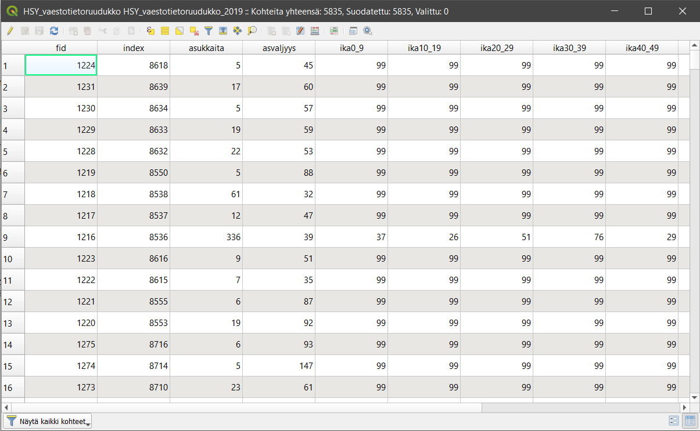
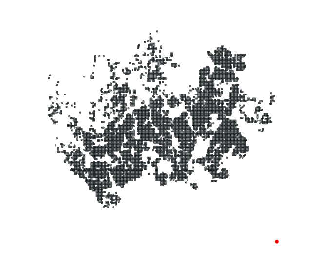
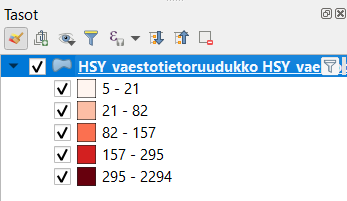

7 Harjoitus 6: Paikkatietoaineiston luokittelu
Harjoituksen sisältö
Harjoituksessa tutustutaan QGISin visualisointi- ja luokittelutoimintoihin.
Harjoituksen tavoite
Opiskelija osaa luokitella ja visualisoida paikkatietoaineistoja QGISin työkaluilla.
Arvioitu kesto
35 minuuttia.
Valmistautuminen
Avaa uusi QGIS-projekti (Projekti > Uusi) ja tallenna se nimellä "QGIS-harjoitus 6". Lisää projektiin seuraavat aineistot:
..kurssihakemisto/6. Harjoitus/HSY_vaestotietoruudukko.gpkg
..kurssihakemisto/6. Harjoitus/L4133B.asc
7.1 Vektoriaineiston luokittelut
Tarkastellaan aluksi HSY_vaestotietoruudukko-vektoriaineistoa, joten piilota muut aineistot näkyvistä. HSY_vaestotietoruudukko-aineisto on GeoPackage-formaatissa. Tutustu aineistoon avaamalla sen attribuuttitaulu (klikkaa hiiren oikeaa painiketta tason päällä ja valitse Avaa attribuuttitaulu). QGISiin avautuu attribuuttitauluikkuna, joka esittelee tason ominaisuuksia ja on erittäin tärkeä osa paikkatietoaineistoa. Kaikilla vektoriaineistoilla on attribuuttitaulu.

Attribuuttitietojen ymmärtämiseksi on hyvä tarkastella taulun sisältöä sekä tutustua samalla aineiston metatietoihin. Metatiedot löytyvät usein aineistontuottajan nettisivuilta tai paikkatietojen löytämiseen tarkoitetuista hakemistoista. Metatiedot kertovat mm. kuka aineiston on tuottanut, mihin tarkoitukseen, millä mittakaavalla ja missä koordinaattijärjestelmässä se on tehty. HSY_vaestotietoruudukko-aineiston on tuottanut Helsingin seudun ympäristöpalvelut ja sen metatiedot löytyvät saman kansion HSY_vaestotietoruudukko.pdf-tiedostosta. Avaa tiedosto ja tutustu eri kenttien (= sarakkeiden) kuvauksiin.
Attribuuttitauluissa sarakkeiden nimet ovat usein lyhennetyssä muodossa, minkä vuoksi sarakkeiden merkitystä on tyypillisesti vaikea päätellä lyhenteistä. HSY_vaestotietoruudukko-aineistossa silmiinpistävää on myös se, että taulukossa toistuu luku 99 useaan otteeseen. Metatietojen avulla voimme kuitenkin selvittää muun muassa sen, miten asukkaita-sarakkeen tiedot on laskettu sekä millä tavalla tiedot on poistettu ruuduissa, joissa asuu 0-4 asukasta. Ika-sarakkeet sisältävät asukkaiden määrät ikäluokittain, mutta niille on annettu arvo 99 aina kun ruudukon asukasmäärä on ollut alle 100. Tarkastele aineistoa myös kartalla. Huomaatko yhden ruudun, joka näyttää sijaitsevan kaukana kaakossa keskellä merta?

Irralliseen ruutuun on tässä aineistossa sijoitettu kaikki ne pk-seudun asukkaat, joilla ei ole vakituista kotiosoitetta. Näytä kohteen tiedot -työkalulla nähdään, että tämän ruudun asukasmäärä on kymmenkertaisesti suurempi kuin minkään muun aineiston ruudun. Se siis vääristää luokittelua ja aineistosta laskettuja tilastoja (mm. keskimääräinen asukastiheys ruutua kohti). Suodatetaan tämä ruutu pois aineistosta: klikkaa tason nimeä hiiren oikealla ja valitse Suodata… Kirjoita (tai valitse tietokentistä ja operaattoreista klikkaamalla) suodatuslausekkeeksi “asukkaita” < 5000. Voit testata suodatuksen toimivuutta klikkaamalla Testaa.

Nyt QGIS näyttää aineistostasi vain ne ruudut, jotka täyttävät annetun ehdon eli joiden kokonaisasukasmäärä on alle 5000.
Paikkatietoineiston ymmärtäminen ennen sen käsittelyä on välttämätöntä. Voimme nyt esimerkiksi päättää, että haluamme tuottaa teemakartan asukkaita-sarakkeen tietojen pohjalta. Näin pystymme myös paremmin tulkitsemaan karttaa ja valitsemaan visualisointia varten sopivat asetukset.
Avaa Tason ominaisuudet ja valitse tason kuvaustekniikaksi Porrastettu. Valitse seuraavasta pudotusvalikosta, minkä kentän arvoihin luokittelusi perustuu (tässä ‘asukkaita’). Aseta vielä oheisen kuvan mukaiset Arvo-, Liukuväri-, Tila- ja Luokat-määrittelyt.
Kun olet saanut ne asetettua, paina Luokittele, ja luokitus tulee näkyviin. Voit myös muokata manuaalisesti arvovälejä kaksoisklikkaamalla Arvot-saraketta tai luokkien nimiä kaksoisklikkaamalla Selite-saraketta. Luokkien nimet näkyvät Tasot-paneelissa ja myös karttatulosteen selitteessä. Paina Käytä, niin näet muutokset kartalla. Karttanäytölle pitäisi muodostua jokseenkin tämän näköinen tilastoteemakartta:


Jos Tasot-paneelissasi ei näy selitettä, paina tason nimen vasemmalla olevaa pientä nuolta ja selitteet avautuvat tason alle kuvan mukaisesti. Palaa vielä Kuvaustekniikka-asetuksiin ja kokeile Tila > Tasaväli. Paina uudelleen Luokittele jos arvot eivät päivity. Kokeile myös vaihtaa luokkien lukumäärää, luokitustapoja ja värityksiä, kunnes löydät mielestäsi sopivan tuloksen. Voit vertailla eri luokittelumenetelmiä ja tutkia aineiston jakaumaa histogrammin avulla. Histogrammi löytyy omalta välilehdeltään. Paina Lataa arvot saadaksesi histogrammin ja luokkien rajat näkyviin.

Muuta vielä symbolin tyyliä. Avaa uudelleen tason ominaisuustiedot ja klikkaa Symboli-kohdan väripalkkia.

Symbolin asetukset -ikkuna aukenee. Siirry Yksinkertainen täyttö -symbolitasolle ja aseta Viivan väriksi läpikuultava tai Viivan tyyliksi Ei viivaa. Paina OK ja OK. Zoomaa karttaan tutkimaan tulosta ja palaa tyyliasetuksiin, jos haluat tehdä vielä muutoksia.
7.2 Rasteriaineiston luokittelut
Aseta nyt L4133B-rasteriaineisto näkyväksi ja piilota muut aineistot. L4133B.asc on Maanmittauslaitoksen avoin korkeusmalliaineisto, joka sisältää osan Helsingistä. Jos aineisto avautuu tuntemattomassa koordinaattijärjestelmässä (= virheellisessä projektiossa), aseta tasolle koordinaattijärjestelmäksi ETRS89/TM35FIN (EPSG:3067). Muista tarkistaa myös projektin koordinaattijärjestelmä. Oletuksena korkeusmalli näyttää tällaiselta:
Huomaa, että QGIS on tunnistanut, että aineisto sisältää jatkuvia arvoja ja on visualisoinut ne yksittäisenä harmaana kanavana. Oletusvärityksellä onnistut erottamaan Pasilan ratapihan oikeassa yläkulmassa.

Zoomaa Pasilan harmaana näkyvään alueeseen ja huomaa, että yksittäiset raiteet eivät erotu. Avaa tason Kuvaustekniikka-asetukset, kuten aiemmin teit vektoriaineiston yhteydessä. Muista, että rasteriaineistojen kuvaustekniikkatyökalut ovat erilaiset kuin vektoriaineistoilla. Voit vaihtaa harmaasävyesityksen pseudoväreiksi. Voit kokeilla myös rinnevarjostetta.

Luokittele aineisto uudelleen niin, että Pasilasta erottuu tarkempia yksityiskohtia. Aseta mittakaavaksi 1:5000 (QGIS-työtilan alapalkista) ja vieritä karttaa tasaisen sävyisenä näkyvään ratapihan alueeseen. Klikkaa auki Min/Max arvojen asetukset ja muokkaa asetuksia niin, että kuva käyttää Min/Max-arvoja ja Tilastojen laajuus -arvoksi on määritelty Nykyinen karttaikkuna. Katso mallia kuvasta:

Paina sitten Käytä ja lopuksi Luokittele arvot uudestaan.
Vasemmanpuoleisessa kuvassa on ratapihan alue pseudoväreillä esitettynä. Oikeanpuoleisessa kuvassa on sama alue sen jälkeen, kun väriliukuma on luokiteltu uudelleen näkyvän karttaikkunan alueen Min/Max-arvojen mukaisesti. Voit myös testata Tila-kohdasta eri jaottelumuotoja. Kvanttiili-valinnassa muodot näkyvät yksivärisenäkin vielä voimakkaammin.
Kun olet valmis, tallenna projektitiedosto kurssihakemistoon pikanäppäimellä CTRL + T tai päävalikosta Projekti > Tallenna.
Psst! Koulutuksen jälkeen saat henkilökohtaista tukea Gispon tukipalvelusta. Lähetä kysymyksesi tai kommenttisi osoitteeseen tuki@gispo.fi!